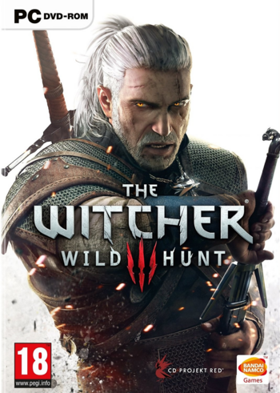

The Witcher 3: Wild Hunt is the third and final installment in the series of games developed by CD Projekt RED featuring the witcher Geralt of Rivia . The game was originally scheduled for release in late 2014, then pushed back to 24 February 2015, and finally released on 19 May 2015. During the first two weeks since release it had sold more than 4 million copies worldwide, more than doubling the total sales of its predecessor, The Witcher 2: Assassins of Kings.
The Witcher 3 is a open world RPG game that continous off where the previous game left off. The game features over 100 hours of content including main content, side quests, missions, and more. Several years before the Witcher 3 launch the game Skyrim by Bethesda launched and served as heavy inspiration for the Witcher 3. It also served as more of a benchmark for Open world games.
As with earlier games, the consequences of Geralt's actions will impact how the narrative progresses. The game has been built using the new REDengine 3 and was designed with player feedback from fans of previous Witcher games in mind.
Buy The Witcher 3: Wild Hunt on Steam Here
The Witcher 3: Wild Hunt Box art